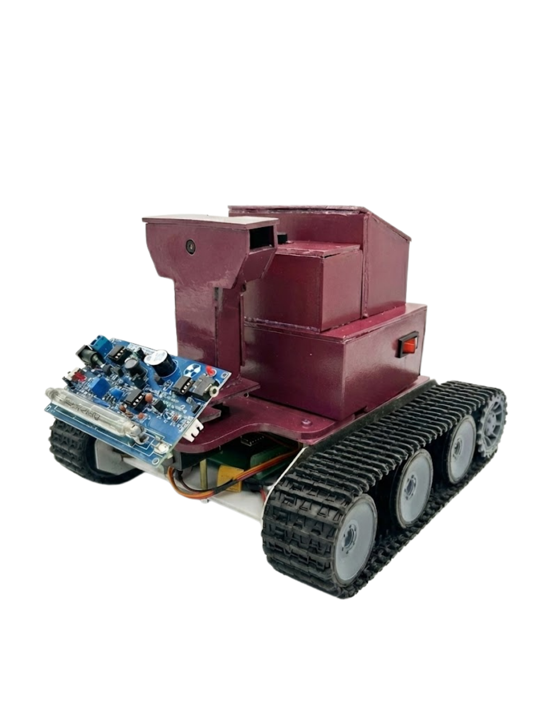
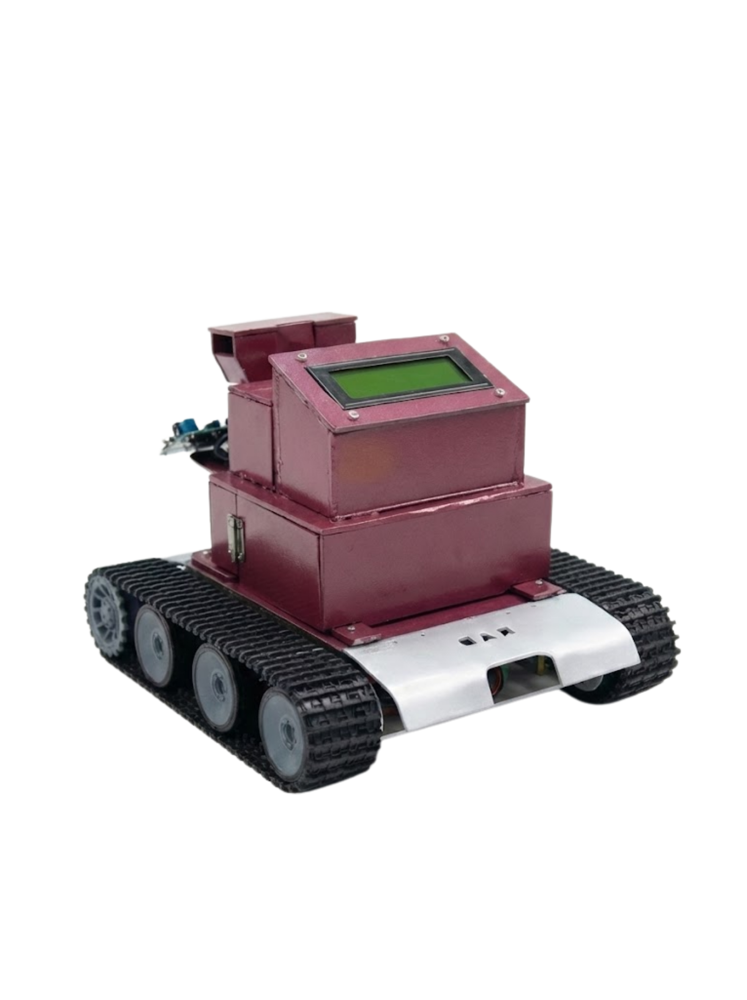

SEMAR
Sarana Edukasi Monitoring Alam & Radiasi
Tentang SEMAR
SEMAR (Sarana Edukasi Monitoring Alam & Radiasi) adalah inovasi sistem robotik cerdas berbasis Internet of Things (IoT) yang dirancang untuk merevolusi cara kita memantau lingkungan radiasi. Alat ini hadir sebagai solusi keselamatan mutakhir yang memungkinkan pengukuran paparan radiasi dilakukan secara presisi dari jarak jauh, memastikan keamanan pengguna sekaligus menjadi sarana edukasi interaktif.
Teknologi & Keunggulan
Rancangan Kami


Ini adalah rancangan kami, CARLINS. Unit ini mampu menjangkau area berisiko tinggi untuk mentransmisikan data telemetri serta video streaming langsung ke dashboard ini guna analisis yang akurat. Sistem ini didukung oleh kendali jarak jauh berbasis Wi-Fi yang memungkinkan operator memantau kondisi lapangan tanpa kontak fisik. Selain itu, fitur peringatan dini secara otomatis akan mengaktifkan alarm jika radiasi terdeteksi melebihi ambang batas aman, menjamin standar keselamatan kerja yang optimal.
Tim Pengembang